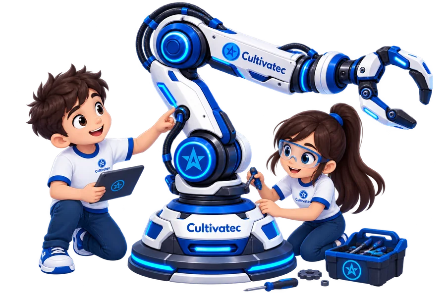
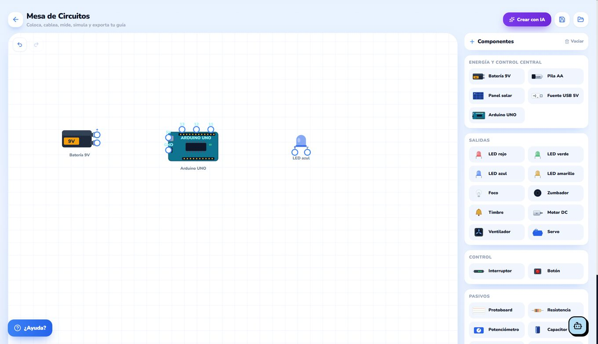
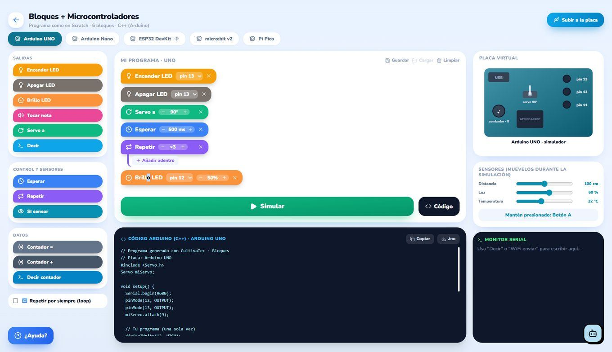
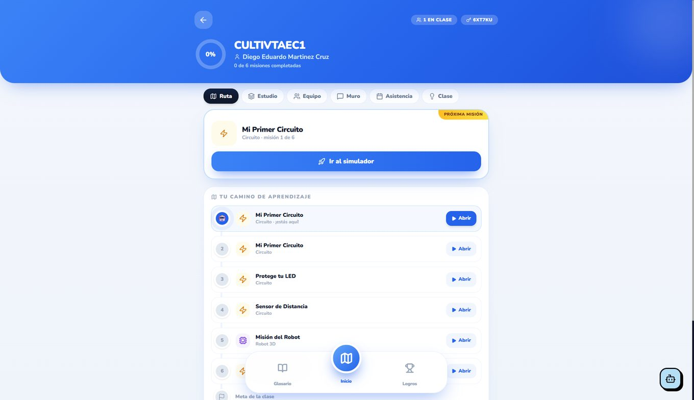
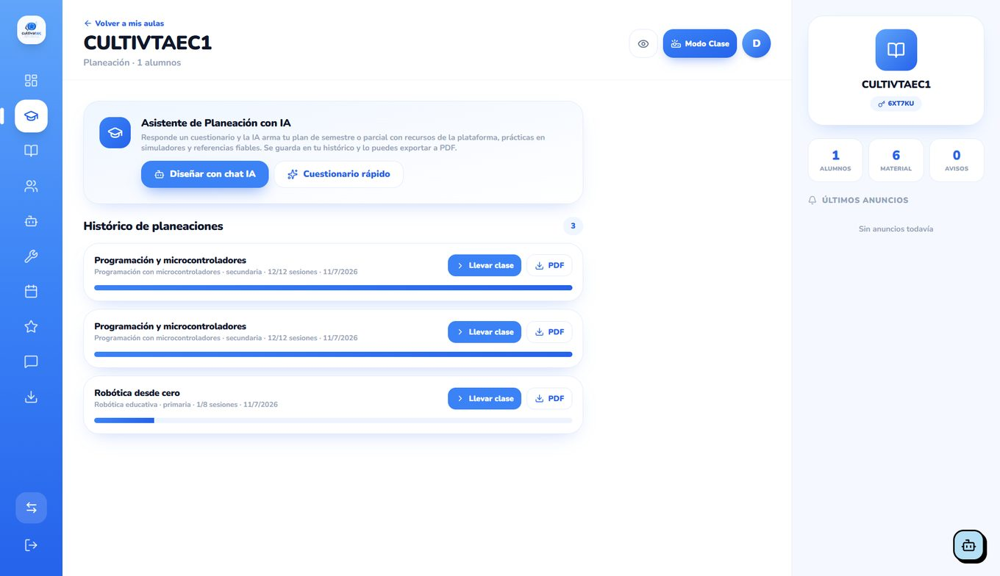
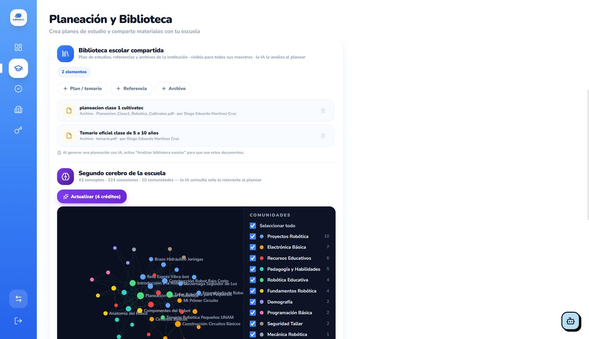

Alumnos
- Simuladores ilimitados
- Misiones, logros y glosario
- Portafolio de proyectos
Dos formas de aprender robótica y STEM: Cultivatec School, el software con simuladores y herramientas para docentes, y los CultivaKits, kits para armar tu primer proyecto con las manos.

Simuladores y gestión académica real. Todo en school.cultivatec.com.mx, sin instalar nada y desde cualquier dispositivo.
Solicitar demo Ver CultivaKits
Equivocarse es gratis: el estudiante puede quemar un LED mil veces, recompilar su código o rediseñar una pieza tantas veces como necesite.
Coloca, cablea, mide y simula. El circuito se comporta como en el laboratorio real: si hay un corto, se nota.

Los componentes se arrastran desde el panel derecho y se cablean pin a pin.
Se programa como en Scratch y la plataforma escribe el C++ real al lado. El alumno ve la equivalencia todo el tiempo.

«Subir a la placa» permite pasar del simulador al hardware real del kit.
Modelado por figuras y operaciones booleanas, con la misma lógica de agrupar/perforar que ya conocen los maestros de Tinkercad.

Vistas 3D, arriba, frente y lado, más importación de STL externos.
El alumno entra a su aula con un código y ve exactamente cuál es su siguiente misión. Cada reto desbloquea el siguiente.

El código de aula (arriba a la derecha) es lo único que necesita el alumno para entrar.
El maestro deja de perder tardes escribiendo secuencias didácticas y persiguiendo calificaciones. Todo queda en su histórico y se exporta a PDF.

Respondes un cuestionario rápido —o lo platicas con la IA— y sale el plan de semestre o parcial, con recursos de la plataforma, prácticas en simuladores y referencias.
Sube el plan de estudios y los materiales oficiales de tu institución. La IA los analiza y construye un mapa de conceptos que consulta al planear.

43 conceptos y 124 conexiones extraídos de los documentos que subió la escuela.
No hay planes recortados ni módulos que se cobran aparte: la licencia escolar abre la plataforma completa para alumnos y docentes.
Nuestra app para Android convierte el aprendizaje de robotica en un juego por niveles: retos diarios, rachas e insignias para que el alumno siga practicando en casa. Su avance cuenta dentro de la ruta que ve el docente.
No hace falta un laboratorio de cómputo: funciona en la tablet, en la laptop y en el celular que ya traen.


En la demo cargamos un tema de tu programa y te mostramos la planeación que genera la IA.
Diseñamos los kits para hacer la robótica más accesible: proyectos de principiante, componentes que un niño puede aprender a usar y precios pensados para que más familias y escuelas puedan empezar.
Precios en pesos mexicanos. Confirma disponibilidad con nuestro equipo en ventas@cultivatec.com.mx.
Entiendes cómo circula la corriente y enciendes tu primer LED.
Aplicas lo aprendido para controlar la secuencia de las luces de un semáforo.
Haces que el circuito responda a una acción, como presionar un botón.
No. Los CultivaKits están pensados para principiantes: el primero parte de un circuito básico y cada kit suma una habilidad nueva sin volver complicado el montaje.
Siguen una progresión: con el 1.0 enciendes un LED, con el 2.0 construyes un semáforo y con el 3.0 creas una alarma que responde a un botón.
Por ahora atendemos por consulta: escríbenos a ventas@cultivatec.com.mx y confirmamos contigo la disponibilidad, la entrega y la forma de pago.
Sí. Cuéntanos tu proyecto en la página Tu escuela y preparamos una propuesta adaptada a tu institución.
Escríbenos y te ayudamos a elegir el kit adecuado. Si lo necesitas para un grupo o un laboratorio, cuéntanos tu proyecto.